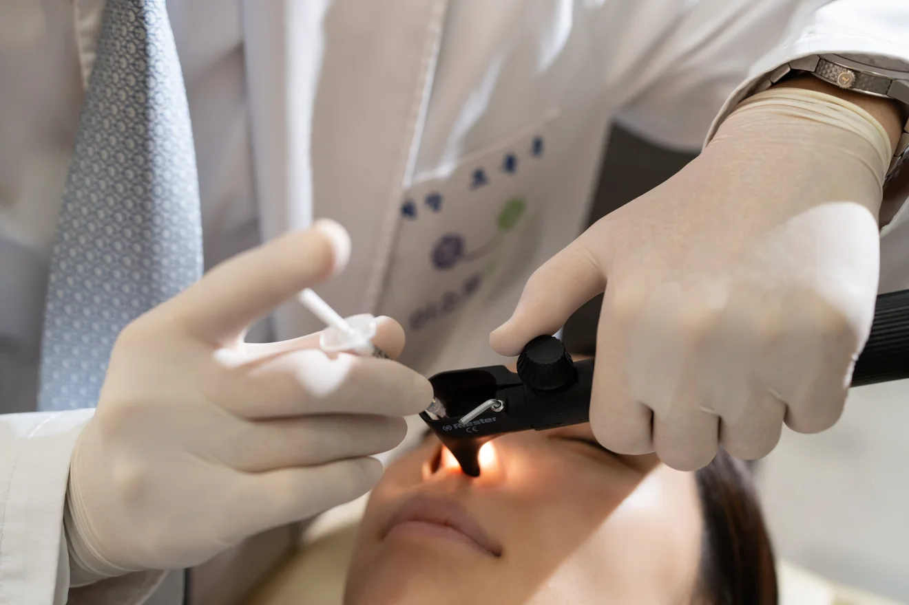

분당점
신분당·수인분당경기 성남시 분당구 성남대로 349 시그마타워 2층
해당하는 항목이 있다면 진료 때 말씀해 주세요. 이 목록은 자가 진단이 아니며, 점수나 결과를 알려드리지 않습니다.
알레르기성 비염은 특정 항원에 대해 점막이 과도하게 반응하는 상태입니다. 항원을 생활에서 완전히 제거하기는 어렵기 때문에, 반응의 강도와 회복 속도에 관여하는 몸의 조건을 함께 살핍니다.
같은 항원에 노출되어도 날에 따라 증상이 다른 분들이 많습니다. 수면 부족, 피로 누적, 찬 기운 노출 같은 조건이 겹칠 때 반응이 커지는 양상을 초진에서 확인합니다.

증상이 심해지는 계절과 환경, 노출 조건을 구체적으로 확인합니다. 알레르기 검사 결과가 있으시면 함께 참고합니다.
점막 처치와 함께 전신 상태에 맞춘 한약을 병행합니다. 증상이 몰리는 시기 전후로 구성을 조정합니다.
침구 관리, 실내 환기와 습도, 외출 후 세정 등 노출을 줄이는 방법을 함께 정리합니다.
증상이 계절에 몰리는 경우, 해당 시기 전에 진료를 시작하는 편이 관리에 수월합니다. 자세한 일정은 초진에서 안내해 드립니다.
치료 경과는 개인의 체질·증상·경과에 따라 다를 수 있으며, 정확한 상태는 내원 진료 후 안내해 드립니다.
반드시 필요하지는 않습니다. 이미 받으신 결과가 있으면 참고하고, 없으면 증상이 나타나는 조건을 문진으로 확인합니다.
증상이 계절에 몰리는 분은 그 시기 전에 관리를 시작하는 경우가 있습니다. 상태에 따라 다르므로 초진에서 상의합니다.
침구와 실내 환경 관리, 외출 후 세정 등을 안내해 드립니다. 생활 관리만으로 해결되지는 않지만, 치료와 함께 가면 도움이 됩니다.
알레르기성 비염 진료는 전국 9개 지점에서 동일한 기준으로 진행합니다.
경기 성남시 분당구 성남대로 349 시그마타워 2층
경기 수원시 영통구 봉영로 1590 밀레니엄프라자 3층
주소 확인 필요
경기 안산시 단원구 고잔로 88 지스타프라자 5층
경기 평택시 중앙2로 16 셀럽시티빌딩 7층
대전광역시 서구 둔산중로 54 센티온빌딩 2층
전북 전주시 완산구 온고을로 28 호진빌딩 3층
주소 확인 필요
주소 확인 필요
본 홈페이지의 내용은 의료법 제56조에 따른 의료광고에 해당할 수 있으며, 치료 경과는 개인의 체질·증상·경과에 따라 다를 수 있습니다. 진료에 관한 정확한 상태와 치료 계획은 내원하여 진료를 받으신 뒤 안내해 드립니다. 비급여 진료비는 비급여 진료비 안내 페이지에서 확인하실 수 있습니다.